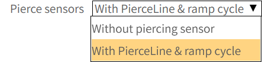
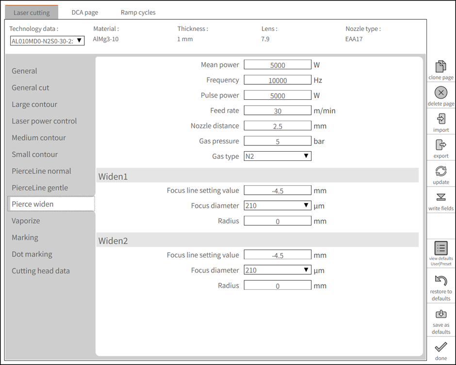

Piercing
Normal piercing
Normal piercing is optimized for fast, reliable processing. The beam remains ignited until the end of the piercing time.
Advantages: Normal piercing depending on the gas type:
-
Oxygen: Start hole is produced with minimal time delay.
-
Nitrogen: Producing the start hole with nitrogen prevents formation of oxides when starting to cut
Gentle piercing
Gentle piercing usually takes a little longer than normal piercing; however, it delivers better quality piercing results.
-
Defined settings possible in combination with a ramp.
-
Minimal amount of slag or molten metal being thrown up.
-
When cutting small contours in stainless steel, a start hole is produced with a small amount of material. This reduces nozzle wear and the increase process reliability.
Multistage piercing
Piercing with up to three independent piercing parameter sets. This allows pre-treatment and refinishing of the piercing, which, for example, greatly reduces the amount of thrown-up material around the piercing.
Area of application: material thicknesses from 10 mm in mild steel, stainless steel, and aluminum.
TJS Cut-90 supports multistage piercing with widening of the pierce hole. Use this feature to pierce thick material. Activate multistage piercing in the technology tables.
Activate the method in the pierce dialog:

Set the individual parameters on the subsequent pages:

PierceLine piercing sensor
Safety margins are added to the piercing time in the cutting tables to ensure process reliability. This is required because the shortest possible piercing time varies depending on the technology, as follows:
-
From one piercing to the next.
-
Depending on the material quality.
The PierceLine sensor detects the end of the piercing and stops the process as soon as the material is completely cut through, which significantly reduces the piercing time.
During piercing, the laser monitors the reflected power. If the piercing is completed before the defined piercing time, the laser control stops piercing and continues cutting immediately.
PierceLine provides the following advantages:
-
Reduced sheet processing time.
-
Reduced wear of the slats.
Set the parameters for the PierceLine sensor in the technology tables:
The following parameters are available under Pierce sensors:
-
without piercing sensor – Disables the PierceLine function.
-
with PierceLine & ramp cycle – Enables the PierceLine function and pierces with ramp cycles. The maximum piercing time is lower than setting piercing time / Ramp cycle time.